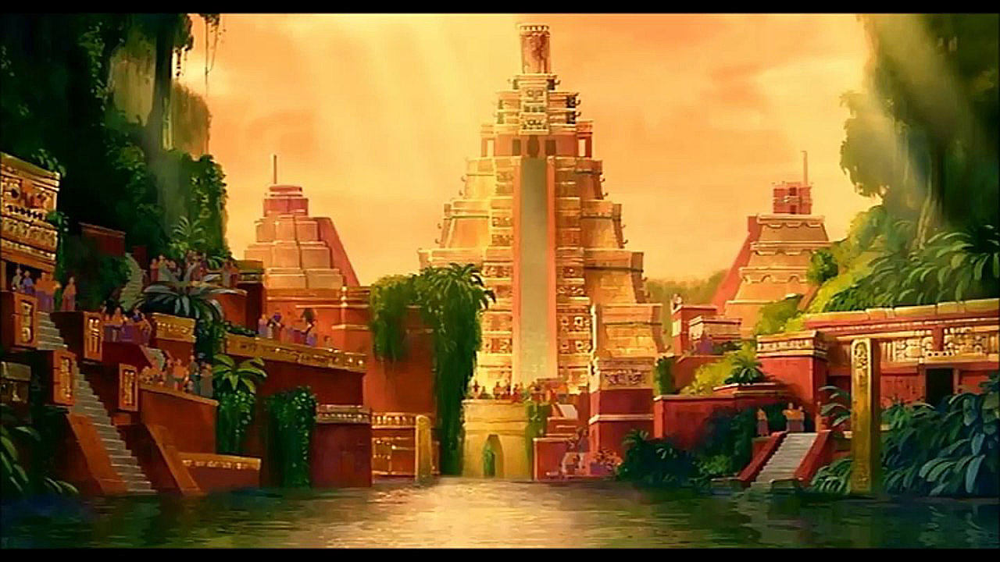
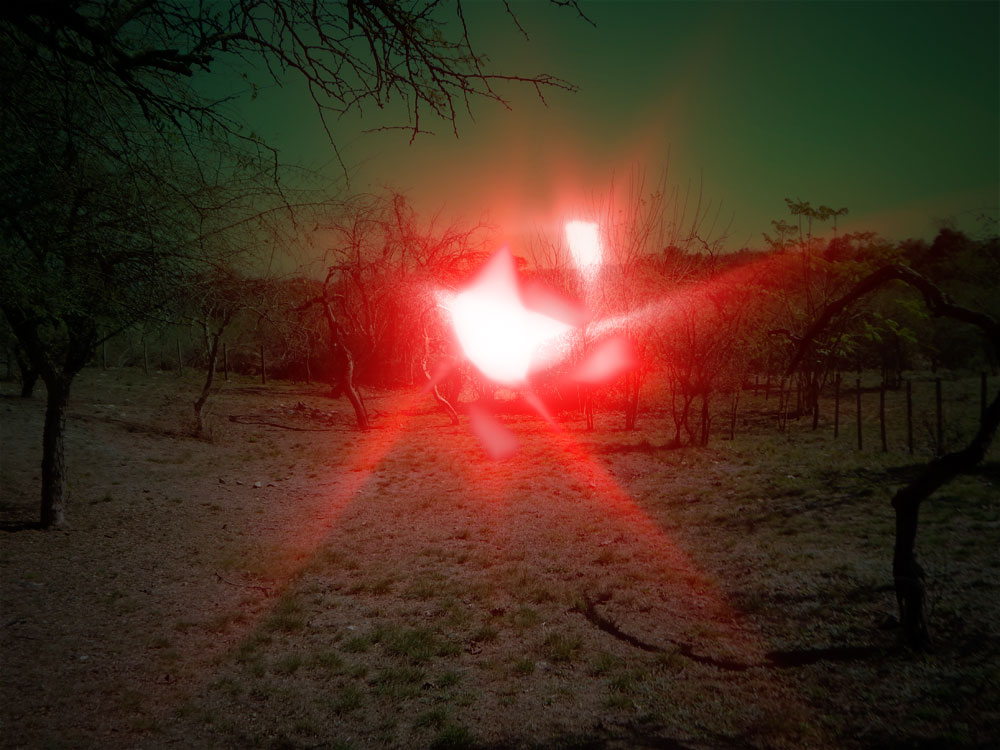
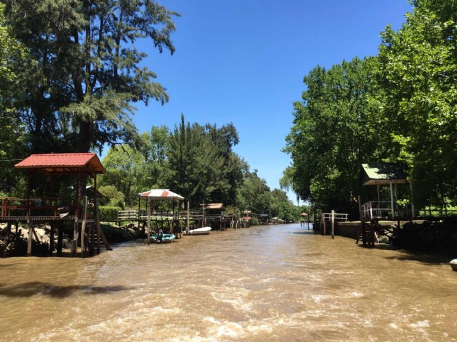

Selected stories:
- 
The "City of Caesars" is a legendary city hidden among the Andine Patagonia. It's rumoured to be the last home of the Inca, storaging lots of gold and precious jewels. A long target of Spanish explorers, nobody ever found it.
- 
The "Luz Mala" (literally "Bad Light") is an old gaucho tale. It's an static bright, cold light that is assumed to be an errant spirit, probably from a deceased christian who didn't receive proper burial services. This light can negatively curse anyone who finds it. To prevent the curse, some say that you must attack the light with a facón (traditional gaucho knife).
- 
The ghost pirates of Los Bajos de Temor have their origin at the late XIX century, right at the entrance to the Delta del Tigre. A pirate band that roamed the Paraná River After a tough standoff with local law enforcement, this pirate gang was officialy beaten and dissolved. However, no local was able to confirm the death of the captain of this gang, but with the piratery cases dissapearing, everybody thought that every pirate vessel was properly sunk. Weeks later, strange things started to happen to the local population. Cattle suddenly dying, occasional fires, loud screechings late in the night and an strange energy around the River were enough to classify this portion of the Paraná Delta as a cursed location.